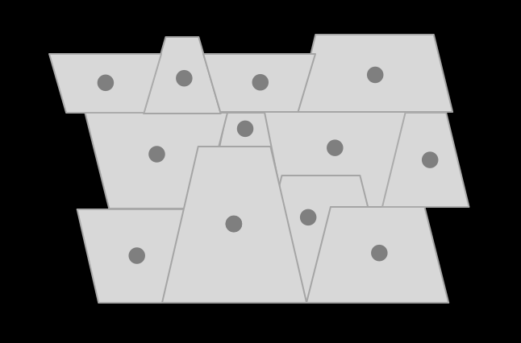
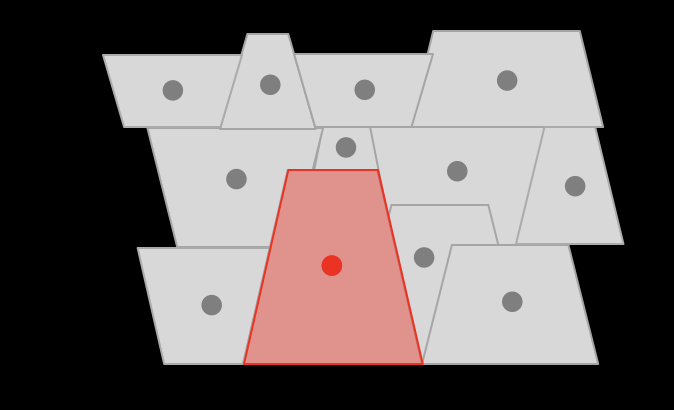
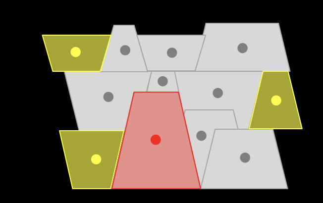

Step 1: Select a) income or race; b) mobility or communication
American cities are diverse and complex. Their neighborhoods are segregated by race and income. Segregation affects access to education, health, and services, as well as the nature of human interactions. Communications in the digital space and the flows of information are constrained by the segregation of cities.
Social Segregation in the US unveils the networks of human interactions among urban dwellers in some of the most populated American cities, including human mobility and online communication. The tool provides an opportunity of navigate through a richer picture of the spatial distribution of social dynamics in America.

Step 1: Select a) income or race; b) mobility or communication

Step 2: Select Census Tract

Step 3: Check the connections with this Census Tract
Xiaowen, Oxford University
Segregation and polarization in urban areas. A.J. Morales, X. Dong, Y. Bar-Yam, A. ‘Sandy’ Pentland. Royal Society Open Science 6 (10), 190573
Segregated interactions in urban and online spaces. X. Dong, A.J. Morales, E. Jahani, E. Moro, B. Lepri, B. Bozkaya, C. Sarraute. arXiv preprint arXiv:1911.04027
Purchase patterns, socioeconomic status, and political inclination. X. Dong, E. Jahani, A.J. Morales, B. Bozkaya, B. Lepri, A. Pentland. The World Bank Economic Review